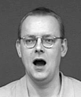
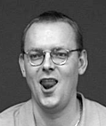
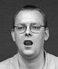

Munsymbolerna presenteras nedan var-och-en i kronologisk ordning. De
första symbolerna (mot blå bakgrund) kommer från Adrean
Clarks bok How
to Write American Sign Language (2012)
och ASLWrites
webbsida; därefter följer (mot vit bakgrund) symboler från en utökad
beskrivning av Todd Hicks (fejsbokpostningar 6
april och15 april
2018); och sist (mot grön backgrund) min variant
av symbolen. De delar av beskrivningarna som bara förekommer i tidigare källor
är skuggade nedan.
smile
“laugh”
frown
“cry”
flat lips
“interest”
blow & motor lips
pressed lips (pensive)
lips pulled to one side
tongue out
blow raspberry
pursed lips
lips out (“kiss”)
kissy
(wide) open mouth
open mouth
lips out “sh”
“nut”
clenched teeth (bared teeth)
clenched & lips out (“cha”)
open mouth & tongue out
tongue wiggle
tongue out to the side
biting lip
“th”
round mouth
puffed & round
sucked cheeks
puffed cheeks
pulled to the side (“recently”)
“disgust”
Many of Clark’s (from 2012) and Hicks’ (from 2018) symbols are so similar as
to be indistinguishable, and I think that many of Hicks’ generalizations are
perfectly straightforward (like the double circle-segment for ’motion’, be it a
movement of the lips or the tongue).
However in Clark’s symbols I see a distinction between cheek
and wide open mouth which I think is missing from Hicks’. I would
suggest that cheek (regardless of whether it is sucked or puffed) should
be portrayed by a circle segment that is less than a half circle, while
the wide open mouth should be written as a circle segment larger than a
half circle. This way sucked cheeks and wide open mouth are
clearly distinguishable from each other, while sucked and puffed
cheeks are consistent with each other.
Mouth Segments in Swedish Sign Language
The data below is from Brita Bergman & Lars Wallin’s article ”A
Preliminary Analysis of Visual Mouth Segments in Swedish Sign Language”
(published in The Hands are the Head of the Mouth, edited by Penny
Boyes Braem & Rachel Sutton-Spence, Signum Verlag, 2001).
The article provides an analysis of a subset of signs in the Swedish Sign
Language (focusing on mouth segments found in ’genuine signs’ – signs which
have native mouth segments, not borrowed from Swedish). The article itself
states that the list of mouth segments that they present is incomplete, but
I've used it as a starting point anyway. (One needs to
start somewhere, right?)
Below mouthing marks (in blue) are added by me,
while attribute values, illustration and /labels/ all come from the
Bergman/Wallin article.
I. /bilabial/
−open
−in
−air
corner
forward
round
jaw
tongue
bmp
II. /cheeks/
−open
−in
+air
corner
forward
round
jaw
tongue
III. /labiodental/
−open
+in
−air
corner
forward
round
jaw
tongue
fv
IV. /stretched/
+open
in
air +corner
−forward
−round
−jaw
tongue
ei
V. /forward/
+open
in
air −corner
+forward
−round
−jaw
tongue
yö
VI. /round/
+open
in
air −corner
+forward
+round
−jaw
tongue
ouå
VII. /pursed/
+open
in
air −corner
−forward
−round
−jaw
tongue
?
VIII. /open/
+open
in
air +corner
forward
round +jaw
tongue

ahä
IX. /airstream/
+open
in +air
corner
forward
round
jaw
tongue
X. /tongue/
+open
in
air
corner
forward
round
jaw +tongue
“The feature open distinguishes between the two classes open and
closed segments and pertains to the position of the lower lip. A segment
in which the lower lip has contact with the upper lip or the upper teeth
is marked −open, a segment in which the lower lip is not in
contact is marked +open. Segment number I (see fig. 12) resembles
a neutral, closed mouth, in that the lips are in contact with each other,
but the lips are tense. The neutral, closed mouth, is not a segment. It
is only when there is extra energy added to the closed mouth, that it
participates in the language production. In also refers to a
position of the lower lip, viz. whether the lower lip is inward and thus
in contact with the upper teeth or not. The feature air refers to
”active” air. If the mouth is -open, as in segment II, the result
is puffed cheeks.” [page 5]
”Corner is used for activity in the corners of the
mouth, forward refers to lip protrusion and, and round to
lip contraction. The feature jaw pertains to jaw opening, i.e.
whether the jaw is markedly lowered or not. Note that in all open
segments (when the lower lip is not in contact), the jaw is also
normally lowered but, as it were, in an unmarked, relaxed
way. Tongue indicates whether the tongue is protruding or not.”
[page 10]
The following mouth shapes have variation in tongue placement, or airflow
only, and are in the article considered synonymous to their corresponding
shapes in the above table (ie /forwardtongue/
and /forwardtongue/ are both considered synonymous
to /forward/ etc). The variants with air are not illustrated in
the article, but are mentioned in the text (hence the lack of pictures here).
Va. /forwardtongue/
+open
in
air −corner
+forward
−round
−jaw
+tongue

l
Vb. /forwardtongue/
+open
in
air −corner
+forward
−round
−jaw
+tongue
VIIIa. /opentongue/
+open
in
air +corner
forward
round +jaw
+tongue

? l
VIIIb. /opentongue/
+open
in
air +corner
forward
round +jaw
+tongue
? ahä
Vc. /forwardair/
+open
in +air
−corner
+forward
−round
−jaw
tongue
?
VIIa. /pursedair/
+open
in +air
−corner
−forward
−round
−jaw
tongue
?
Oral adverbs
?
/pursed/ ‘small’ (monosegmental form)
ei
/stretched/ ‘intense’, ‘with effort’
(not described)
?
m?
[-open +forward]
‘normally’, ‘with ease’
My Swedish Sign Language Course Notes Combined with ASLWrite
Description below from my notes on oral adverbs in Swedish Sign Language
from course at Stockholm university.
/round/
round mouth(?)
[u]
Munnen formas till ’runda läppar’ och kinderna sugs lite inåt.
Munrörelsen kännetecknar ’tunn’, ’liten’, ’syns som en prick långt
borta’. Utförs ofta med lätt kisande ögon.
Betyder också ’lättsamt’, till
exempel GÅ-MED-LÄTTA-STEG, CYKLA.
Uttrycker ’liten’ till storleksbeskrivande tecken.
(not described) [-open +forward]
lips out
[mm]
Munnen hålls ihop med lite
trutande läppar. Munrörelsen kännetecknar ’så här mycket’, ’ungefär
så långt’, ’lagom’.
Kan betyda ’normalt’, ’van’, till
exempel GÅ-I-NORMAL-TAKT, KÖRA-BIL, CYKLA.
/stretched/
clenched teeth
[i]
Uttrycker ’ansträngt’,
’besvärligt’ eller ’mödosamt’, till
exempel GÅ-LÅNG-VÄG, KÖRA-LÅNG-VÄG, LÄSA-TUNGT.
Visar tänderna.
/bilabial/
pressed lips
[–]
Orala adverb som uttrycker
’bestämt’ till verbet SKRIVA@rd (’skriva bestämt’).
Sammanpressade läppar utdragna till tunt streck.
Består av en rörelse från j till a som kännetecknar ’enorm’, ’stor’,
’oändlig’. Observera att tecknets manuella artikulation är en kort intensiv
rörelse framåt-nedåt.